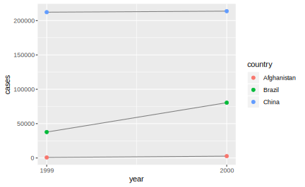
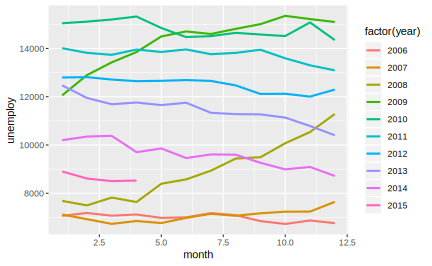

6 tidyr
6.1 简介
“Happy families are all alike; every unhappy family is unhappy in its own way.” –– Leo Tolstoy
“Tidy datasets are all alike, but every messy dataset is messy in its own way.” –– Hadley Wickham
整洁的数据(Tidy data)是进行数据操作和 ggplot2 可视化的基础，所谓数据整理（清洗、清理），就是把 messy data 转换为 tidy data 的过程。在 tidyverse 生态中，tidyr 便负责数据的整理和变型：
如果一个数据集是整洁的，需要满足以下三个要素：
1. 每个变量有一个专属列(Each variable must have its own column)
2. 每个观测有一个专属行(Each observation must have its own row)
3. 每个值必须都有一个专属的存储单元(Each value must its own cell)

这三条规则是互相关联的，你不可能只满足三条规则中的两条，所以我们可以更简化地把清洁数据的要求写成：
1. 每列是一个变量(Variables go in columns)
2. 每行是一个观测(Observatiosn go in rows)
同样的数据可以有不同的表现形式，但只有满足整洁数据的三个条件的数据集才是最容易使用的，这也是。以下的3个数据集背后的均来自1999年和2000年世界卫生组织在阿富汗、巴西和中国的一次肺结核病例调查，都有country、year、cases和population四个变量，但采用了不同的组织方式:
table1
#> # A tibble: 6 x 4
#> country year cases population
#> <chr> <int> <int> <int>
#> 1 Afghanistan 1999 745 19987071
#> 2 Afghanistan 2000 2666 20595360
#> 3 Brazil 1999 37737 172006362
#> 4 Brazil 2000 80488 174504898
#> 5 China 1999 212258 1272915272
#> 6 China 2000 213766 1280428583
table2
#> # A tibble: 12 x 4
#> country year type count
#> <chr> <int> <chr> <int>
#> 1 Afghanistan 1999 cases 745
#> 2 Afghanistan 1999 population 19987071
#> 3 Afghanistan 2000 cases 2666
#> 4 Afghanistan 2000 population 20595360
#> 5 Brazil 1999 cases 37737
#> 6 Brazil 1999 population 172006362
#> # … with 6 more rows
table3
#> # A tibble: 6 x 3
#> country year rate
#> * <chr> <int> <chr>
#> 1 Afghanistan 1999 745/19987071
#> 2 Afghanistan 2000 2666/20595360
#> 3 Brazil 1999 37737/172006362
#> 4 Brazil 2000 80488/174504898
#> 5 China 1999 212258/1272915272
#> 6 China 2000 213766/1280428583table4a和table4b分别是以 cases 和 population 为值的数据透视表：
table4a
#> # A tibble: 3 x 3
#> country `1999` `2000`
#> * <chr> <int> <int>
#> 1 Afghanistan 745 2666
#> 2 Brazil 37737 80488
#> 3 China 212258 213766
table4b
#> # A tibble: 3 x 3
#> country `1999` `2000`
#> * <chr> <int> <int>
#> 1 Afghanistan 19987071 20595360
#> 2 Brazil 172006362 174504898
#> 3 China 1272915272 1280428583在上面的例子中，只有table1 符合清洁数据的标准。在table2 中，type不是一个变量，它的值 cases 和 population 才是变量，进而导致了每一行不是一个完整的观测。在 table3 中，rate 同样不是一个变量，cases 和 population 的值被挤在了一个单元里。至于 table4a 和table4b，1999 和 2000不是变量，而是一个表示年份的变量的值。
为什么要为获得清洁的数据如此大费周折呢？主要有两个优点：
- 清洁数据的规则使得我们可以遵从一个一致、明确的结构存储数据。学习处理这些数据的工具变得很容易，因为你的对象在底层是一致的。
- 把变量存储在列中可以把R的向量化函数优势发挥到极致。我们已经学过
mutate()和summarize()函数，许多内置的 R 函数都是对向量进行操作的。只要有了清洁的数据，后面的数据变换工作就很容易：
# Compute rate per 10,000
table1 %>%
mutate(rate = cases / population * 10000)
#> # A tibble: 6 x 5
#> country year cases population rate
#> <chr> <int> <int> <int> <dbl>
#> 1 Afghanistan 1999 745 19987071 0.373
#> 2 Afghanistan 2000 2666 20595360 1.29
#> 3 Brazil 1999 37737 172006362 2.19
#> 4 Brazil 2000 80488 174504898 4.61
#> 5 China 1999 212258 1272915272 1.67
#> 6 China 2000 213766 1280428583 1.67
# Compute cases per year
table1 %>%
group_by(year) %>%
summarize(cases = sum(cases))
#> # A tibble: 2 x 2
#> year cases
#> <int> <int>
#> 1 1999 250740
#> 2 2000 296920
# 或者：
table1 %>%
count(year, wt = cases)
#> # A tibble: 2 x 2
#> year n
#> <int> <int>
#> 1 1999 250740
#> 2 2000 296920
# Visualise changes over time
library(ggplot2)
ggplot(table1, aes(year, cases)) +
geom_line(aes(group = country), colour = "grey50") +
geom_point(aes(colour = country))+
scale_x_continuous(breaks = c(1999,2000),labels = c("1999","2000"))
6.1.1 练习
- 用
table2计算rate(\(\frac{cases}{population}\))。提示：需要进行以下四步操作：
- 得到每个国家每年的
cases
- 得到每个国家每年的
population
- 计算
rate = cases / population
- 把算好的数据存储到正确的位置
首先，分别对cases和population建立一张表，并且确保两张表的排列顺序相同：
table2
#> # A tibble: 12 x 4
#> country year type count
#> <chr> <int> <chr> <int>
#> 1 Afghanistan 1999 cases 745
#> 2 Afghanistan 1999 population 19987071
#> 3 Afghanistan 2000 cases 2666
#> 4 Afghanistan 2000 population 20595360
#> 5 Brazil 1999 cases 37737
#> 6 Brazil 1999 population 172006362
#> # … with 6 more rows
(t2_cases <- filter(table2, type == "cases") %>%
rename(cases = count) %>%
arrange(country, year))
#> # A tibble: 6 x 4
#> country year type cases
#> <chr> <int> <chr> <int>
#> 1 Afghanistan 1999 cases 745
#> 2 Afghanistan 2000 cases 2666
#> 3 Brazil 1999 cases 37737
#> 4 Brazil 2000 cases 80488
#> 5 China 1999 cases 212258
#> 6 China 2000 cases 213766
(t2_population <- filter(table2, type == "population") %>%
rename(population = count) %>%
arrange(country, year))
#> # A tibble: 6 x 4
#> country year type population
#> <chr> <int> <chr> <int>
#> 1 Afghanistan 1999 population 19987071
#> 2 Afghanistan 2000 population 20595360
#> 3 Brazil 1999 population 172006362
#> 4 Brazil 2000 population 174504898
#> 5 China 1999 population 1272915272
#> 6 China 2000 population 1280428583计算rate
t2_cases_per_cap <- tibble(
t2_cases$country,
t2_cases$year,
cases = t2_cases$cases,
population = t2_population$population
)
t2_cases_per_cap
#> # A tibble: 6 x 4
#> `t2_cases$country` `t2_cases$year` cases population
#> <chr> <int> <int> <int>
#> 1 Afghanistan 1999 745 19987071
#> 2 Afghanistan 2000 2666 20595360
#> 3 Brazil 1999 37737 172006362
#> 4 Brazil 2000 80488 174504898
#> 5 China 1999 212258 1272915272
#> 6 China 2000 213766 1280428583
t2_cases_per_cap %>%
mutate(rate = cases/population) %>%
select(1,2,5) %>%
## 改变列名
mutate(
country = t2_cases$country,
year = t2_cases$year
) %>%
select(country,year,rate)
#> # A tibble: 6 x 3
#> country year rate
#> <chr> <int> <dbl>
#> 1 Afghanistan 1999 0.0000373
#> 2 Afghanistan 2000 0.000129
#> 3 Brazil 1999 0.000219
#> 4 Brazil 2000 0.000461
#> 5 China 1999 0.000167
#> 6 China 2000 0.0001676.2 spread()和gather()
请看下面的两张表格：

细看两表，不难发现它们实质上相同的数据(第二张表是以x为行字段，y为列字段，z为值的数据透视表)。第一种形式成为长数据(long data,indexed data，指标型数据)，在长数据（指标型）数据汇总，你需要看指标来找到需要变量的数值（变量x，y，z的值）。第二种称为宽数据(wide data,Cartesian data,笛卡尔型数据)，需要看行和列的交叉点来找到对应的值。我们不能简单的说哪一种格式梗优，因为两种形式都有可能是整洁的，这取决于值“A”、“B”、“C”、“D”的含义。
注意到上面的确实值：在一种形式下显示存在的缺失值在另一种格式下不一定能直接看得出来。NA代表了一种缺失情况，但有时数值确实单纯是因为那里没有值。（而不是因为记录失误，没有获取到等原因）
数据整理常需要化宽为长，称为聚集(gathering)，但偶尔也需要化长为宽，称为扩散(spreading)。tidyr包分别提供了gather()和spread()函数来实现以上操作。
6.2.1 gather()
gather()函数用来处理messy data 的一个常见症状：部分列名不是变量的名子，而是变量的值(some of the column names are not names of variables, but values of a variale)，或者说一行中有多个观测。例如，在table4a中，1999和2000不是某个变量的名字，而是一个表示年份的变量的不同取值：
table4a
#> # A tibble: 3 x 3
#> country `1999` `2000`
#> * <chr> <int> <int>
#> 1 Afghanistan 745 2666
#> 2 Brazil 37737 80488
#> 3 China 212258 213766可以将之与清洁数据table1相比对，不难看出，在table4a中的3行数据在table1中需要6行来表示，这就需要“化宽为长”的gather()函数。
table1
#> # A tibble: 6 x 4
#> country year cases population
#> <chr> <int> <int> <int>
#> 1 Afghanistan 1999 745 19987071
#> 2 Afghanistan 2000 2666 20595360
#> 3 Brazil 1999 37737 172006362
#> 4 Brazil 2000 80488 174504898
#> 5 China 1999 212258 1272915272
#> 6 China 2000 213766 1280428583gather()有四个主要参数：
data: 需要调用的数据集
key： 存放原来各列名的新变量的变量名（键列）
value存放原来单元格中的值的新变量的变量名（值列）
...: 指定的要聚集（融合）的变量，可以通过枚举指定:A,B,C或者通过范围进行指定A:D,也可以同过-号 指定不需要聚集的列：-E,-F。不管要聚集多少列，gather()函数都把它们聚集为一个键列和一个值列。
接下来我们整理table4a数据集，这里需要聚集的列是1999和2000:
## 注意这里`1999`和`2000`的引用方法
gather(table4a,key = year,value = cases,`1999`,`2000`)
#> # A tibble: 6 x 3
#> country year cases
#> <chr> <chr> <int>
#> 1 Afghanistan 1999 745
#> 2 Brazil 1999 37737
#> 3 China 1999 212258
#> 4 Afghanistan 2000 2666
#> 5 Brazil 2000 80488
#> 6 China 2000 213766图示变换过程：

另一个例子：美国劳工市场的月度数据，首先创建一个messy data：
library(lubridate)
ec2 <- economics %>% as_tibble() %>%
transmute(year = year(date),
month = month(date),
rate = unemploy) %>%
filter(year > 2005) %>%
spread(year,rate)
ec2
#> # A tibble: 12 x 11
#> month `2006` `2007` `2008` `2009` `2010` `2011` `2012` `2013` `2014` `2015`
#> <dbl> <dbl> <dbl> <dbl> <dbl> <dbl> <dbl> <dbl> <dbl> <dbl> <dbl>
#> 1 1 7064 7116 7685 12058 15046 14013 12797 12471 10202 8903
#> 2 2 7184 6927 7497 12898 15113 13820 12813 11950 10349 8610
#> 3 3 7072 6731 7822 13426 15202 13737 12713 11689 10380 8504
#> 4 4 7120 6850 7637 13853 15325 13957 12646 11760 9702 8526
#> 5 5 6980 6766 8395 14499 14849 13855 12660 11654 9859 NA
#> 6 6 7001 6979 8575 14707 14474 13962 12692 11751 9460 NA
#> # … with 6 more rows下面，将除了month列的所有列聚集为一个键列和一个值列
ec2 %>%
gather(-month,key = year,value = unemploy)
#> # A tibble: 120 x 3
#> month year unemploy
#> <dbl> <chr> <dbl>
#> 1 1 2006 7064
#> 2 2 2006 7184
#> 3 3 2006 7072
#> 4 4 2006 7120
#> 5 5 2006 6980
#> 6 6 2006 7001
#> # … with 114 more rows为了让数据更好用，我们还可以增加两个额外的参数：
convert = TRUE将键列year变量从字符串转换为数值型（在练习里会谈到为什么year变成了字符串），na.rm = TRUE则可以自动移除没有值的月份（其实这个确实并不是数据的丢失，而只是因为那个时间还有到而已）。
以上数据整理好之后，就很容易用ggplot2作的。如我们可以关注长期趋势，或者查看季节性变化：


6.2.2 spread()
spread()函数是gather()的逆运算，当某个变量的值实际上是其他变量的名字，就需要将数据集化长为宽，也可以说这种“错误”的表现形式是一个观测分散到了多行中（an observation is scattered across multiple rows）。例如table2():
table2
#> # A tibble: 12 x 4
#> country year type count
#> <chr> <int> <chr> <int>
#> 1 Afghanistan 1999 cases 745
#> 2 Afghanistan 1999 population 19987071
#> 3 Afghanistan 2000 cases 2666
#> 4 Afghanistan 2000 population 20595360
#> 5 Brazil 1999 cases 37737
#> 6 Brazil 1999 population 172006362
#> # … with 6 more rows例如，前两列结合起来，才能得到对1999年阿富汗在cases和population两个变量上的观测。
在spread()中，你只需要指定两个参数（除了data以外），key和value，这里分别是type和count:
table2 %>%
spread(key = type,value = count)
#> # A tibble: 6 x 4
#> country year cases population
#> <chr> <int> <int> <int>
#> 1 Afghanistan 1999 745 19987071
#> 2 Afghanistan 2000 2666 20595360
#> 3 Brazil 1999 37737 172006362
#> 4 Brazil 2000 80488 174504898
#> 5 China 1999 212258 1272915272
#> 6 China 2000 213766 1280428583观察table2经过扩散的结果，不难看出spread(key,value)其实是构造透视表的过程。key列将被用作列字段，value列被用作透视表中的值字段，其他列将被当做行字段。
变换的图示：

6.2.3 练习
- 在下面的例子中，研究为什么
spread()和gather()不是完美对称的。
(stocks <- tibble(
year = c(2015, 2015, 2016, 2016),
half = c(1, 2, 1, 2),
return = c(1.88, 0.59, 0.92, 0.17)
))
#> # A tibble: 4 x 3
#> year half return
#> <dbl> <dbl> <dbl>
#> 1 2015 1 1.88
#> 2 2015 2 0.59
#> 3 2016 1 0.92
#> 4 2016 2 0.17
stocks %>%
spread(year, return) %>%
gather(`2015`:`2016`, key = "year", value = "return")
#> # A tibble: 4 x 3
#> half year return
#> <dbl> <chr> <dbl>
#> 1 1 2015 1.88
#> 2 2 2015 0.59
#> 3 1 2016 0.92
#> 4 2 2016 0.17先后使用spread()和gather()无法得到一个相同的数据集（除了列的顺序）是因为，数据整理有时会丢失列的类型信息。当spread()将变量year的值2015和2016用作列的名字时，它们自然被转化为了字符串"2015"和"2016"；随后gather()把列名用作键列year的值，从而year自然变成了一个字符向量。
如果想要复原这个数据集，可以在gather()中使用convert = T，不过这时返回的数据类型是R经过猜测的结果，并不总保证和原数据一致，数据整理带来的不可避免的信息损耗。
stocks %>%
spread(year, return) %>%
gather(`2015`:`2016`, key = "year", value = "return",convert = T)
#> # A tibble: 4 x 3
#> half year return
#> <dbl> <int> <dbl>
#> 1 1 2015 1.88
#> 2 2 2015 0.59
#> 3 1 2016 0.92
#> 4 2 2016 0.172.为什么下面的数据框不能应用
spread()？可以添加一列解决这个问题吗？
people <- tribble(
~name, ~key, ~value,
"Phillip Woods", "age", 45,
"Phillip Woods", "height", 186,
"Phillip Woods", "age", 50,
"Jessica Cordero", "age", 37,
"Jessica Cordero", "height", 156
)因为这个数据集里有两个对于“Phillip Woods”在变量age上年龄的观测，spread()就要把由(Phillips Woods,age)确定的单元格里“塞进两个值”。本质上因为name和key这两个变量上的值不能唯一确定一行，所以我们只要添加一列，让name、key和新列可以唯一确定一行即可：
people2 <- people %>%
group_by(name, key) %>%
mutate(obs = row_number())
people2
#> # A tibble: 5 x 4
#> # Groups: name, key [4]
#> name key value obs
#> <chr> <chr> <dbl> <int>
#> 1 Phillip Woods age 45 1
#> 2 Phillip Woods height 186 1
#> 3 Phillip Woods age 50 2
#> 4 Jessica Cordero age 37 1
#> 5 Jessica Cordero height 156 1
spread(people2,key,value)
#> # A tibble: 3 x 4
#> # Groups: name [2]
#> name obs age height
#> <chr> <int> <dbl> <dbl>
#> 1 Jessica Cordero 1 37 156
#> 2 Phillip Woods 1 45 186
#> 3 Phillip Woods 2 50 NA6.3 separate()和untie()
spread()函数和gather()函数可以帮你解决数据中的变量放错了位置的问题。而separate()和untie()函数则是为了解决以下问题：多个变量挤在了同一列中，或者一个变量分散到了不同列中。
6.3.1 separate()
现在我们知道了如何用spread()和gather()将table2和table4整理为tidy data，现在要学会如何用separate()处理table3了：
table3
#> # A tibble: 6 x 3
#> country year rate
#> * <chr> <int> <chr>
#> 1 Afghanistan 1999 745/19987071
#> 2 Afghanistan 2000 2666/20595360
#> 3 Brazil 1999 37737/172006362
#> 4 Brazil 2000 80488/174504898
#> 5 China 1999 212258/1272915272
#> 6 China 2000 213766/1280428583在table3中，rate同时包含了cases和population两个变量，我们需要把它拆分(separate)为两列，separate()函数可以将这一混杂的列拆分成多个变量，它包含以下四个主要参数：
data: 需要调整的数据框
col: 需要进行拆分的列的列名
into: 拆分后新生成变量的列名，格式为字符串向量
sep: 对如何拆分原变量的描述，其可以是正则表达式，如_表示通过下划线拆分，或[^a-z]表示通过任意非字符字母拆分，或一个指定位置的整数。默认情况下，sep将认定一个非字符字母进行划分
## 这个例子里，sep不是必需的
table3 %>%
separate(col = rate,into = c("cases","population"))
#> # A tibble: 6 x 4
#> country year cases population
#> <chr> <int> <chr> <chr>
#> 1 Afghanistan 1999 745 19987071
#> 2 Afghanistan 2000 2666 20595360
#> 3 Brazil 1999 37737 172006362
#> 4 Brazil 2000 80488 174504898
#> 5 China 1999 212258 1272915272
#> 6 China 2000 213766 1280428583整理的图示：

注意，以上输出的tibble中，cases和population被设定为字符串类型，使用convert = T将其转换为数值变量
table3 %>%
separate(rate, into = c("cases", "population"), convert = T)
#> # A tibble: 6 x 4
#> country year cases population
#> <chr> <int> <int> <int>
#> 1 Afghanistan 1999 745 19987071
#> 2 Afghanistan 2000 2666 20595360
#> 3 Brazil 1999 37737 172006362
#> 4 Brazil 2000 80488 174504898
#> 5 China 1999 212258 1272915272
#> 6 China 2000 213766 12804285836.3.2 unite()
unite()函数是separate()的逆运算——它可以将多列合并为一列。尽管它不太常用，但是知道这个函数还是很重要的。
在table5中，原来的year变量被拆成了两个列，可以用unite()，只需要指定要合并后的列名和要合并的列。默认情况下，新列中将用_分隔符
table5
#> # A tibble: 6 x 4
#> country century year rate
#> * <chr> <chr> <chr> <chr>
#> 1 Afghanistan 19 99 745/19987071
#> 2 Afghanistan 20 00 2666/20595360
#> 3 Brazil 19 99 37737/172006362
#> 4 Brazil 20 00 80488/174504898
#> 5 China 19 99 212258/1272915272
#> 6 China 20 00 213766/1280428583
unite(table5,col = year, century,year)
#> # A tibble: 6 x 3
#> country year rate
#> <chr> <chr> <chr>
#> 1 Afghanistan 19_99 745/19987071
#> 2 Afghanistan 20_00 2666/20595360
#> 3 Brazil 19_99 37737/172006362
#> 4 Brazil 20_00 80488/174504898
#> 5 China 19_99 212258/1272915272
#> 6 China 20_00 213766/1280428583设置sep参数可以取消分隔符：
unite(table5,col = year,century,year,sep="")
#> # A tibble: 6 x 3
#> country year rate
#> <chr> <chr> <chr>
#> 1 Afghanistan 1999 745/19987071
#> 2 Afghanistan 2000 2666/20595360
#> 3 Brazil 1999 37737/172006362
#> 4 Brazil 2000 80488/174504898
#> 5 China 1999 212258/1272915272
#> 6 China 2000 213766/1280428583整理的图示：

table6 <- unite(table5,col = year,century,year,sep="")
table5
#> # A tibble: 6 x 4
#> country century year rate
#> * <chr> <chr> <chr> <chr>
#> 1 Afghanistan 19 99 745/19987071
#> 2 Afghanistan 20 00 2666/20595360
#> 3 Brazil 19 99 37737/172006362
#> 4 Brazil 20 00 80488/174504898
#> 5 China 19 99 212258/1272915272
#> 6 China 20 00 213766/12804285836.3.3 练习
separate()中的extra和fill参数的作用是什么？用下面两个数据框进行实验：
tibble(x = c("a,b,c", "d,e,f,g", "h,i,j")) %>%
separate(x, into = c("one", "two", "three"))
#> # A tibble: 3 x 3
#> one two three
#> <chr> <chr> <chr>
#> 1 a b c
#> 2 d e f
#> 3 h i j
tibble(x = c("a,b,c", "d,e", "f,g,i")) %>%
separate(x, into = c("one", "two", "three"))
#> # A tibble: 3 x 3
#> one two three
#> <chr> <chr> <chr>
#> 1 a b c
#> 2 d e <NA>
#> 3 f g iextra用来告诉separate()函数如何处理分列过程中多出来的元素(too many pieces，即into指定的列数小于原数据中某行可分的元素个数)，fill负责如何处理元素不够的情况(not enough pieces，即into指定的列数大于原数据中某行可分的元素个数)。默认情况下，extra = "drop"，separate()将丢弃多余的元素，并生成一条警告信息：
tibble(x = c("a,b,c", "d,e,f,g", "h,i,j")) %>%
separate(x, into = c("one", "two", "three"),extra = "drop")
#> # A tibble: 3 x 3
#> one two three
#> <chr> <chr> <chr>
#> 1 a b c
#> 2 d e f
#> 3 h i jextra = "merge"将把多余的元素和前一个元素当做一个整体：
tibble(x = c("a,b,c", "d,e,f,g", "h,i,j")) %>%
separate(x, c("one", "two", "three"),extra = "merge")
#> # A tibble: 3 x 3
#> one two three
#> <chr> <chr> <chr>
#> 1 a b c
#> 2 d e f,g
#> 3 h i j对于元素过少的情况，默认的fill = "warn"将会用NA进行填充，但会生成一条警告。fill = "right"会尽可能让靠左的列拥有可用的元素，用NA填充右边的列；fill = "left"正好相反。这两种手动设置都不会产生warning:
tibble(x = c("a,b,c", "d,e,", "h,i,j")) %>%
separate(x, c("one", "two", "three"),fill = "left")
#> # A tibble: 3 x 3
#> one two three
#> <chr> <chr> <chr>
#> 1 a b c
#> 2 d e ""
#> 3 h i j
tibble(x = c("a,b,c", "d,e,", "h,i,j")) %>%
separate(x, c("one", "two", "three"),fill = "right")
#> # A tibble: 3 x 3
#> one two three
#> <chr> <chr> <chr>
#> 1 a b c
#> 2 d e ""
#> 3 h i j2.
unite()和separate()均有一个remove参数，它的作用是什么？
remove控制是否在unite()或separate()输出的数据框中保留原来的列，默认remove = T。如果想保留原来未合并/分离的格列，可以设置remove = F
table5
#> # A tibble: 6 x 4
#> country century year rate
#> * <chr> <chr> <chr> <chr>
#> 1 Afghanistan 19 99 745/19987071
#> 2 Afghanistan 20 00 2666/20595360
#> 3 Brazil 19 99 37737/172006362
#> 4 Brazil 20 00 80488/174504898
#> 5 China 19 99 212258/1272915272
#> 6 China 20 00 213766/1280428583
table5 %>% unite(col = year_unite,century,year,sep = "",remove = F)
#> # A tibble: 6 x 5
#> country year_unite century year rate
#> <chr> <chr> <chr> <chr> <chr>
#> 1 Afghanistan 1999 19 99 745/19987071
#> 2 Afghanistan 2000 20 00 2666/20595360
#> 3 Brazil 1999 19 99 37737/172006362
#> 4 Brazil 2000 20 00 80488/174504898
#> 5 China 1999 19 99 212258/1272915272
#> 6 China 2000 20 00 213766/1280428583
- 探究
tidyr中一个与separate()类似的函数extract()的用法
separate()函数的分列操作是基于参数sep的，无论是给sep传入字符串指定分隔符，还是用数值指定分隔的位置，separate()必须要有一个分隔符才能正常运作（可以把sep = n看做第n个和第n+1个元素之间的一个空白分隔符）
extract()用一个正则表达式regex描述要分隔的列col中存在的模式，在正则表达式中的每个子表达式(用()定义)将被认为是into中的一个元素，因此，extract()比separate()使用起来更加广泛灵活。例如下面的数据集无法用separate()分列，因为无法用一个各行的分隔符(的位置)不一样，但用extract()中的正则表达式就很简单：
tibble(x = c("X1", "X20", "AA11", "AA2")) %>%
extract(x, c("variable", "id"), regex = "([A-Z]+)([0-9]+)")
#> # A tibble: 4 x 2
#> variable id
#> <chr> <chr>
#> 1 X 1
#> 2 X 20
#> 3 AA 11
#> 4 AA 2适当设计regex，实现的效果可以与设置sep完全一致：
# example with separators
tibble(x = c("X_1", "X_2", "AA_1", "AA_2")) %>%
extract(x, c("variable", "id"), regex = "([A-Z]+)_([0-9])")
#> # A tibble: 4 x 2
#> variable id
#> <chr> <chr>
#> 1 X 1
#> 2 X 2
#> 3 AA 1
#> 4 AA 2
# example with position
tibble(x = c("X1", "X2", "Y1", "Y2")) %>%
extract(x, c("variable", "id"), regex = "([A-Z])([0-9])")
#> # A tibble: 4 x 2
#> variable id
#> <chr> <chr>
#> 1 X 1
#> 2 X 2
#> 3 Y 1
#> 4 Y 26.4 缺失值
数据整理改变了数据的呈现方式，随之而来的一个话题便是缺失值。通常当我们泛泛地使用“缺失值 (missing value)” 这个名词的时候，其实是指以下两种“缺失”方式中的某一种：
- 显式缺失(Explicitly missing): 在数据中用
NA标识 - 隐式缺失(Implicitly missing): 未出现在数据中的值
R for Data Science中对这两种缺失的概括：
An explicit missing value is the presence of an absence; an implicit missing value is the absence of a presence.
通过一个简单的数据框区分两种数据缺失的方式：
stocks <- tibble(
year = c(2015, 2015, 2015, 2015, 2016, 2016, 2016),
qtr = c( 1, 2, 3, 4, 2, 3, 4),
return = c(1.88, 0.59, 0.35, NA, 0.92, 0.17, 2.66)
)
stocks
#> # A tibble: 7 x 3
#> year qtr return
#> <dbl> <dbl> <dbl>
#> 1 2015 1 1.88
#> 2 2015 2 0.59
#> 3 2015 3 0.35
#> 4 2015 4 NA
#> 5 2016 2 0.92
#> 6 2016 3 0.17
#> # … with 1 more row我们很容易找到stocks第四条观测在变量return上的一个NA，因为它是显式缺失的。另一个隐式缺失的值是(year = 2016,qtr = 1)对应的观测，它没有出现在数据集中。
数据呈现方式上的改变可以将隐式缺失值变成显式。比如，用spread()函数构造以year为行字段，以return为值的透视表,这样就会产生一个属于水平(year = 2016,qtr = 1)的单元格：
stocks %>%
spread(key = year,value = return)
#> # A tibble: 4 x 3
#> qtr `2015` `2016`
#> <dbl> <dbl> <dbl>
#> 1 1 1.88 NA
#> 2 2 0.59 0.92
#> 3 3 0.35 0.17
#> 4 4 NA 2.66现在，再使用gather()不能得到原来的数据框，因为将比原来多出一行显示的缺失值
stocks %>%
spread(key = year,value = return) %>%
gather(key = year,value = return,`2015`:`2016`)
#> # A tibble: 8 x 3
#> qtr year return
#> <dbl> <chr> <dbl>
#> 1 1 2015 1.88
#> 2 2 2015 0.59
#> 3 3 2015 0.35
#> 4 4 2015 NA
#> 5 1 2016 NA
#> 6 2 2016 0.92
#> # … with 2 more rows如果研究者认为这些缺失值是无足轻重的,na.rm = T将在gather()生成的数据框中移除含有缺失值的行：
## 现在输出数据框比原来少一行
stocks %>%
spread(key = year,value = return) %>%
gather(key = year,value = return,`2015`:`2016`,na.rm = T)
#> # A tibble: 6 x 3
#> qtr year return
#> <dbl> <chr> <dbl>
#> 1 1 2015 1.88
#> 2 2 2015 0.59
#> 3 3 2015 0.35
#> 4 2 2016 0.92
#> 5 3 2016 0.17
#> 6 4 2016 2.66另一个用于处理确实值的有用工具是complete()函数，它将生成一个指定列集合里面所有的水平组合，并自动将原本隐式的缺失值填充为NA
stocks %>%
complete(year, qtr)
#> # A tibble: 8 x 3
#> year qtr return
#> <dbl> <dbl> <dbl>
#> 1 2015 1 1.88
#> 2 2015 2 0.59
#> 3 2015 3 0.35
#> 4 2015 4 NA
#> 5 2016 1 NA
#> 6 2016 2 0.92
#> # … with 2 more rowsfill() 函数专门用来填充缺失值,它接受一些需要填充缺失值的列，并用最近的值调换 NA，.direction 参数控制用填充的方向：direction = “up" 将由下往上填充，NA 将被替换为它下面那一列的值；direction = "donw" 反之
treatment <- tribble(
~ person, ~ treatment, ~response,
"Derrick Whitmore", 1, 7,
NA, 2, 10,
NA, 3, 9,
"Katherine Burke", 1, 4
)
treatment %>%
fill(person,.direction = "up")
#> # A tibble: 4 x 3
#> person treatment response
#> <chr> <dbl> <dbl>
#> 1 Derrick Whitmore 1 7
#> 2 Katherine Burke 2 10
#> 3 Katherine Burke 3 9
#> 4 Katherine Burke 1 4
treatment %>%
fill(person,.direction = "down")
#> # A tibble: 4 x 3
#> person treatment response
#> <chr> <dbl> <dbl>
#> 1 Derrick Whitmore 1 7
#> 2 Derrick Whitmore 2 10
#> 3 Derrick Whitmore 3 9
#> 4 Katherine Burke 1 46.5 Case Study
To finish off the chapter, let’s pull together everything you’ve learned to tackle a realistic data tidying problem. The tidyr::who dataset contains tuberculosis (TB) cases broken down by year, country, age, gender, and diagnosis method. The data comes from the 2014 World Health Organization Global Tuberculosis Report, available at http://www.who.int/tb/country/data/download/en/.
There’s a wealth of epidemiological information in this dataset, but it’s challenging to work with the data in the form that it’s provided:
who
#> # A tibble: 7,240 x 60
#> country iso2 iso3 year new_sp_m014 new_sp_m1524 new_sp_m2534 new_sp_m3544
#> <chr> <chr> <chr> <int> <int> <int> <int> <int>
#> 1 Afghan… AF AFG 1980 NA NA NA NA
#> 2 Afghan… AF AFG 1981 NA NA NA NA
#> 3 Afghan… AF AFG 1982 NA NA NA NA
#> 4 Afghan… AF AFG 1983 NA NA NA NA
#> 5 Afghan… AF AFG 1984 NA NA NA NA
#> 6 Afghan… AF AFG 1985 NA NA NA NA
#> # … with 7,234 more rows, and 52 more variables: new_sp_m4554 <int>,
#> # new_sp_m5564 <int>, new_sp_m65 <int>, new_sp_f014 <int>,
#> # new_sp_f1524 <int>, new_sp_f2534 <int>, new_sp_f3544 <int>,
#> # new_sp_f4554 <int>, new_sp_f5564 <int>, new_sp_f65 <int>,
#> # new_sn_m014 <int>, new_sn_m1524 <int>, new_sn_m2534 <int>,
#> # new_sn_m3544 <int>, new_sn_m4554 <int>, new_sn_m5564 <int>,
#> # new_sn_m65 <int>, new_sn_f014 <int>, new_sn_f1524 <int>,
#> # new_sn_f2534 <int>, new_sn_f3544 <int>, new_sn_f4554 <int>,
#> # new_sn_f5564 <int>, new_sn_f65 <int>, new_ep_m014 <int>,
#> # new_ep_m1524 <int>, new_ep_m2534 <int>, new_ep_m3544 <int>,
#> # new_ep_m4554 <int>, new_ep_m5564 <int>, new_ep_m65 <int>,
#> # new_ep_f014 <int>, new_ep_f1524 <int>, new_ep_f2534 <int>,
#> # new_ep_f3544 <int>, new_ep_f4554 <int>, new_ep_f5564 <int>,
#> # new_ep_f65 <int>, newrel_m014 <int>, newrel_m1524 <int>,
#> # newrel_m2534 <int>, newrel_m3544 <int>, newrel_m4554 <int>,
#> # newrel_m5564 <int>, newrel_m65 <int>, newrel_f014 <int>,
#> # newrel_f1524 <int>, newrel_f2534 <int>, newrel_f3544 <int>,
#> # newrel_f4554 <int>, newrel_f5564 <int>, newrel_f65 <int>This is a very typical real-life example dataset. It contains redundant columns, odd variable codes, and many missing values. In short, who is messy, and we’ll need multiple steps to tidy it. Like dplyr, tidyr is designed so that each function does one thing well. That means in real-life situations you’ll usually need to string together multiple verbs into a pipeline.
The best place to start is almost always to gather together the columns that are not variables. Let’s have a look at what we’ve got:
- It looks like
country,iso2, andiso3are three variables that redundantly specify the country.
yearis also a variable
- We don’t know what all the other columns are yet, but given the structure in the variable names (e.g.
new_sp_m014,new_ep_m014,new_ep_f014) these are likely to be values, not variables.
So we need to gather together all the columns from new_sp_m014 to newrel_f65. We don’t know what those values represent yet, so we’ll give them the generic name "key". We know the cells represent the count of cases, so we’ll use the variable cases. There are a lot of missing values in the current representation, so for now we’ll use na.rm just so we can focus on the values that are present.
who1 <- who %>%
gather(key,value = "cases",-country:-year,na.rm = T)
who1
#> # A tibble: 76,046 x 6
#> country iso2 iso3 year key cases
#> <chr> <chr> <chr> <int> <chr> <int>
#> 1 Afghanistan AF AFG 1997 new_sp_m014 0
#> 2 Afghanistan AF AFG 1998 new_sp_m014 30
#> 3 Afghanistan AF AFG 1999 new_sp_m014 8
#> 4 Afghanistan AF AFG 2000 new_sp_m014 52
#> 5 Afghanistan AF AFG 2001 new_sp_m014 129
#> 6 Afghanistan AF AFG 2002 new_sp_m014 90
#> # … with 7.604e+04 more rowsWe can get some hint of the structure of the values in the new key column by counting them:
who1 %>%
count(key)
#> # A tibble: 56 x 2
#> key n
#> <chr> <int>
#> 1 new_ep_f014 1032
#> 2 new_ep_f1524 1021
#> 3 new_ep_f2534 1021
#> 4 new_ep_f3544 1021
#> 5 new_ep_f4554 1017
#> 6 new_ep_f5564 1017
#> # … with 50 more rowsYou might be able to parse this out by yourself with a little thought and some experimentation, but luckily we have the data dictionary handy. It tells us:
1. The first three letters of each column denote whether the column contains new or old cases of TB. In this dataset, each column contains new cases.
2. The next two letters describe the type of TB:
* rel stands for cases of relapse
* ep stands for cases of extrapulmonary TB
* sn stands for cases of pulmonary TB that could not be diagnosed by a pulmonary smear (smear negative)
* sp stands for cases of pulmonary TB that could be diagnosed be a pulmonary smear (smear positive)
The sixth letter gives the sex of TB patients. The dataset groups cases by males (
m) and females (f).The remaining numbers gives the age group. The dataset groups cases into seven age groups:
014= 0 – 14 years old
1524= 15 – 24 years old
2534= 25 – 34 years old
3544= 35 – 44 years old
4554= 45 – 54 years old
5564= 55 – 64 years old
65= 65 or older
We need to make a minor fix to the format of the column names: unfortunately the names are slightly inconsistent because instead of new_rel we have newrel (it’s hard to spot this here but if you don’t fix it we’ll get errors in subsequent steps). You’ll learn about str_replace() in strings, but the basic idea is pretty simple: replace the characters “newrel” with “new_rel”. This makes all variable names consistent.
who2 <- who1 %>%
mutate(key = stringr::str_replace(key, "newrel", "new_rel"))
who2
#> # A tibble: 76,046 x 6
#> country iso2 iso3 year key cases
#> <chr> <chr> <chr> <int> <chr> <int>
#> 1 Afghanistan AF AFG 1997 new_sp_m014 0
#> 2 Afghanistan AF AFG 1998 new_sp_m014 30
#> 3 Afghanistan AF AFG 1999 new_sp_m014 8
#> 4 Afghanistan AF AFG 2000 new_sp_m014 52
#> 5 Afghanistan AF AFG 2001 new_sp_m014 129
#> 6 Afghanistan AF AFG 2002 new_sp_m014 90
#> # … with 7.604e+04 more rowsWe can separate the values in each code with two passes of separate(). The first pass will split the codes at each underscore.
who3 <- who2 %>%
separate(key, c("new", "type", "sexage"), sep = "_")
who3
#> # A tibble: 76,046 x 8
#> country iso2 iso3 year new type sexage cases
#> <chr> <chr> <chr> <int> <chr> <chr> <chr> <int>
#> 1 Afghanistan AF AFG 1997 new sp m014 0
#> 2 Afghanistan AF AFG 1998 new sp m014 30
#> 3 Afghanistan AF AFG 1999 new sp m014 8
#> 4 Afghanistan AF AFG 2000 new sp m014 52
#> 5 Afghanistan AF AFG 2001 new sp m014 129
#> 6 Afghanistan AF AFG 2002 new sp m014 90
#> # … with 7.604e+04 more rowsThen we might as well drop the new column because it’s constant in this dataset. While we’re dropping columns, let’s also drop iso2 and iso3 since they’re redundant.
who3 %>%
count(new)
#> # A tibble: 1 x 2
#> new n
#> <chr> <int>
#> 1 new 76046
who4 <- who3 %>%
select(-new, -iso2, -iso3)Next we’ll separate sexage into sex and age by splitting after the first character:
who5 <- who4 %>%
separate(sexage, c("sex", "age"), sep = 1)
who5
#> # A tibble: 76,046 x 6
#> country year type sex age cases
#> <chr> <int> <chr> <chr> <chr> <int>
#> 1 Afghanistan 1997 sp m 014 0
#> 2 Afghanistan 1998 sp m 014 30
#> 3 Afghanistan 1999 sp m 014 8
#> 4 Afghanistan 2000 sp m 014 52
#> 5 Afghanistan 2001 sp m 014 129
#> 6 Afghanistan 2002 sp m 014 90
#> # … with 7.604e+04 more rowsThe who dataset is now tidy!
I’ve shown you the code a piece at a time, assigning each interim result to a new variable. This typically isn’t how you’d work interactively. Instead, you’d gradually build up a complex pipe:
who %>%
gather(key, value, new_sp_m014:newrel_f65, na.rm = TRUE) %>%
mutate(key = stringr::str_replace(key, "newrel", "new_rel")) %>%
separate(key, c("new", "var", "sexage")) %>%
select(-new, -iso2, -iso3) %>%
separate(sexage, c("sex", "age"), sep = 1)
#> # A tibble: 76,046 x 6
#> country year var sex age value
#> <chr> <int> <chr> <chr> <chr> <int>
#> 1 Afghanistan 1997 sp m 014 0
#> 2 Afghanistan 1998 sp m 014 30
#> 3 Afghanistan 1999 sp m 014 8
#> 4 Afghanistan 2000 sp m 014 52
#> 5 Afghanistan 2001 sp m 014 129
#> 6 Afghanistan 2002 sp m 014 90
#> # … with 7.604e+04 more rows6.5.1 练习
- 在清理
who数据框时，我们说iso2和iso3在有了country之后是冗余的，证明这一点
如果iso2和iso3相对于country是冗余的，则在数据集中对于变量country的每个值，仅有一个iso2和iso3的水平组合(country能唯一确定一条观测)。
这里要用到distinct()函数，它将返回数据框中某些列出现的的全部不重复的水平组合（注意complete()是”制造出“全部可能的水平组合），和unique()类似，但速度更快：
6.6 拓展：None-tidy data
Before we continue on to other topics, it’s worth talking briefly about non-tidy data. Earlier in the chapter, I used the pejorative term “messy” to refer to non-tidy data. That’s an oversimplification: there are lots of useful and well-founded data structures that are not tidy data. There are two main reasons to use other data structures:
- Alternative representations may have substantial performance or space advantages.
- Specialised fields have evolved their own conventions for storing data that may be quite different to the conventions of tidy data.
Either of these reasons means you’ll need something other than a tibble (or data frame). If your data does fit naturally into a rectangular structure composed of observations and variables, I think tidy data should be your default choice. But there are good reasons to use other structures; tidy data is not the only way.
If you’d like to learn more about non-tidy data, I’d highly recommend this thoughtful blog post by Jeff Leek: http://simplystatistics.org/2016/02/17/non-tidy-data/
6.7 tidyr 1.0.0
tidyr 于 2019 年 9 月 14 日发布了版本 1.0.0，有以下重大变化：
New
pivot_longer()andpivot_wider()provide improved tools for reshaping, supercedingspread()andgather().New
unnest_auto(),unnest_longer(),unnest_wider(), andhoist()provide new tools for rectangling, converting deeply nested lists into tidy data frames.nest()andunnest()have been changed to match an emerging principle for the design of...interfaces. Four new functions (pack()/unpack(), andchop()/unchop()) reveal that nesting is the combination of two simpler steps.New
expand_grid(), a variant ofbase::expand.grid(). This is a useful function to know about, but also serves as a good reason to discuss the important role thatvctrsplays behind the scenes. You shouldn’t ever have to learn aboutvctrs, but it brings improvements to consistency and performance.
参考 https://www.tidyverse.org/articles/2019/09/tidyr-1-0-0/
文档：
vignette("pivot")、vignette("rectangle")andvignette("nest")provide detailed documentation and case studies of pivotting, rectangling, and nesting respectively.
vignette("in-packages")provides best practices for using tidyr inside another package, and detailed advice on working with multiple versions of tidyr if an interface change has affected your package.
6.7.1 pivot_longer 和 pivot_wider
pivot_longer() 和 pivot_wider() 分别对应原来的 gather() 和 spread()，如今 API 更加容易理解：
6.7.1.1 pivot_longer()
基本用法：
relig_income
#> # A tibble: 18 x 11
#> religion `<$10k` `$10-20k` `$20-30k` `$30-40k` `$40-50k` `$50-75k` `$75-100k`
#> <chr> <dbl> <dbl> <dbl> <dbl> <dbl> <dbl> <dbl>
#> 1 Agnostic 27 34 60 81 76 137 122
#> 2 Atheist 12 27 37 52 35 70 73
#> 3 Buddhist 27 21 30 34 33 58 62
#> 4 Catholic 418 617 732 670 638 1116 949
#> 5 Don’t k… 15 14 15 11 10 35 21
#> 6 Evangel… 575 869 1064 982 881 1486 949
#> # … with 12 more rows, and 3 more variables: `$100-150k` <dbl>, `>150k` <dbl>,
#> # `Don't know/refused` <dbl>
relig_income %>%
pivot_longer(cols = -religion,
names_to = "income",
values_to = "count")
#> # A tibble: 180 x 3
#> religion income count
#> <chr> <chr> <dbl>
#> 1 Agnostic <$10k 27
#> 2 Agnostic $10-20k 34
#> 3 Agnostic $20-30k 60
#> 4 Agnostic $30-40k 81
#> 5 Agnostic $40-50k 76
#> 6 Agnostic $50-75k 137
#> # … with 174 more rowsnames_to 和 values_to 参数相当于原来 gather() 中的 key 和 value，其中 “键” 列的默认名称变为 “name”
Numeric data in column names
pivot_longer() 现在提供了 names_ptype 和 values_ptypes 两个参数调整数据集变长后键列和值列的数据类别。看一下 billboard 数据集：
billboard
#> # A tibble: 317 x 79
#> artist track date.entered wk1 wk2 wk3 wk4 wk5 wk6 wk7 wk8
#> <chr> <chr> <date> <dbl> <dbl> <dbl> <dbl> <dbl> <dbl> <dbl> <dbl>
#> 1 2 Pac Baby… 2000-02-26 87 82 72 77 87 94 99 NA
#> 2 2Ge+h… The … 2000-09-02 91 87 92 NA NA NA NA NA
#> 3 3 Doo… Kryp… 2000-04-08 81 70 68 67 66 57 54 53
#> 4 3 Doo… Loser 2000-10-21 76 76 72 69 67 65 55 59
#> 5 504 B… Wobb… 2000-04-15 57 34 25 17 17 31 36 49
#> 6 98^0 Give… 2000-08-19 51 39 34 26 26 19 2 2
#> # … with 311 more rows, and 68 more variables: wk9 <dbl>, wk10 <dbl>,
#> # wk11 <dbl>, wk12 <dbl>, wk13 <dbl>, wk14 <dbl>, wk15 <dbl>, wk16 <dbl>,
#> # wk17 <dbl>, wk18 <dbl>, wk19 <dbl>, wk20 <dbl>, wk21 <dbl>, wk22 <dbl>,
#> # wk23 <dbl>, wk24 <dbl>, wk25 <dbl>, wk26 <dbl>, wk27 <dbl>, wk28 <dbl>,
#> # wk29 <dbl>, wk30 <dbl>, wk31 <dbl>, wk32 <dbl>, wk33 <dbl>, wk34 <dbl>,
#> # wk35 <dbl>, wk36 <dbl>, wk37 <dbl>, wk38 <dbl>, wk39 <dbl>, wk40 <dbl>,
#> # wk41 <dbl>, wk42 <dbl>, wk43 <dbl>, wk44 <dbl>, wk45 <dbl>, wk46 <dbl>,
#> # wk47 <dbl>, wk48 <dbl>, wk49 <dbl>, wk50 <dbl>, wk51 <dbl>, wk52 <dbl>,
#> # wk53 <dbl>, wk54 <dbl>, wk55 <dbl>, wk56 <dbl>, wk57 <dbl>, wk58 <dbl>,
#> # wk59 <dbl>, wk60 <dbl>, wk61 <dbl>, wk62 <dbl>, wk63 <dbl>, wk64 <dbl>,
#> # wk65 <dbl>, wk66 <lgl>, wk67 <lgl>, wk68 <lgl>, wk69 <lgl>, wk70 <lgl>,
#> # wk71 <lgl>, wk72 <lgl>, wk73 <lgl>, wk74 <lgl>, wk75 <lgl>, wk76 <lgl>显然，我们希望将所有以 "wk"开头的列聚合以得到整洁数据，键列和值列分别命名为 “week” 和 “rank”。另外要考虑的一点是，我们很可能之后想计算歌曲保持在榜单上的周数，故需要将 “week” 列转换为数值类型：
billboard_tidy <- billboard %>%
pivot_longer(cols = starts_with("wk"),
names_to = "week",
values_to = "rank",
names_prefix = "wk",
names_ptypes = list(week = integer()),
values_drop_na = T)
billboard_tidy
#> # A tibble: 5,307 x 5
#> artist track date.entered week rank
#> <chr> <chr> <date> <int> <dbl>
#> 1 2 Pac Baby Don't Cry (Keep... 2000-02-26 1 87
#> 2 2 Pac Baby Don't Cry (Keep... 2000-02-26 2 82
#> 3 2 Pac Baby Don't Cry (Keep... 2000-02-26 3 72
#> 4 2 Pac Baby Don't Cry (Keep... 2000-02-26 4 77
#> 5 2 Pac Baby Don't Cry (Keep... 2000-02-26 5 87
#> 6 2 Pac Baby Don't Cry (Keep... 2000-02-26 6 94
#> # … with 5,301 more rowsnames_prefix 去除前缀 "wk"，names_ptype 以列表的形式转换键列的数据类型
## 计算保持周数
billboard_tidy %>%
group_by(track) %>%
summarise(stay = max(week) - min(week) + 1) %>%
arrange(stay)
#> # A tibble: 316 x 2
#> track stay
#> <chr> <dbl>
#> 1 Cherchez LaGhost 1
#> 2 No Me Dejes De Quere... 1
#> 3 Souljas 1
#> 4 Toca's Miracle 1
#> 5 Deck The Halls 2
#> 6 Got Beef 2
#> # … with 310 more rowsMany variables in column names
pivot_longer() 现在可以方便地拆分键列，之前曾处理过 who 数据集：
who
#> # A tibble: 7,240 x 60
#> country iso2 iso3 year new_sp_m014 new_sp_m1524 new_sp_m2534 new_sp_m3544
#> <chr> <chr> <chr> <int> <int> <int> <int> <int>
#> 1 Afghan… AF AFG 1980 NA NA NA NA
#> 2 Afghan… AF AFG 1981 NA NA NA NA
#> 3 Afghan… AF AFG 1982 NA NA NA NA
#> 4 Afghan… AF AFG 1983 NA NA NA NA
#> 5 Afghan… AF AFG 1984 NA NA NA NA
#> 6 Afghan… AF AFG 1985 NA NA NA NA
#> # … with 7,234 more rows, and 52 more variables: new_sp_m4554 <int>,
#> # new_sp_m5564 <int>, new_sp_m65 <int>, new_sp_f014 <int>,
#> # new_sp_f1524 <int>, new_sp_f2534 <int>, new_sp_f3544 <int>,
#> # new_sp_f4554 <int>, new_sp_f5564 <int>, new_sp_f65 <int>,
#> # new_sn_m014 <int>, new_sn_m1524 <int>, new_sn_m2534 <int>,
#> # new_sn_m3544 <int>, new_sn_m4554 <int>, new_sn_m5564 <int>,
#> # new_sn_m65 <int>, new_sn_f014 <int>, new_sn_f1524 <int>,
#> # new_sn_f2534 <int>, new_sn_f3544 <int>, new_sn_f4554 <int>,
#> # new_sn_f5564 <int>, new_sn_f65 <int>, new_ep_m014 <int>,
#> # new_ep_m1524 <int>, new_ep_m2534 <int>, new_ep_m3544 <int>,
#> # new_ep_m4554 <int>, new_ep_m5564 <int>, new_ep_m65 <int>,
#> # new_ep_f014 <int>, new_ep_f1524 <int>, new_ep_f2534 <int>,
#> # new_ep_f3544 <int>, new_ep_f4554 <int>, new_ep_f5564 <int>,
#> # new_ep_f65 <int>, newrel_m014 <int>, newrel_m1524 <int>,
#> # newrel_m2534 <int>, newrel_m3544 <int>, newrel_m4554 <int>,
#> # newrel_m5564 <int>, newrel_m65 <int>, newrel_f014 <int>,
#> # newrel_f1524 <int>, newrel_f2534 <int>, newrel_f3544 <int>,
#> # newrel_f4554 <int>, newrel_f5564 <int>, newrel_f65 <int>
## tidyr 一章中使用的方法
who %>%
gather(starts_with("new"),
key = key,
value = value,
na.rm = T) %>%
extract(key,
into = c("diagnosis", "gender", "age"),
regex = "new_?(.*)_(.)(.*)")
#> # A tibble: 76,046 x 8
#> country iso2 iso3 year diagnosis gender age value
#> <chr> <chr> <chr> <int> <chr> <chr> <chr> <int>
#> 1 Afghanistan AF AFG 1997 sp m 014 0
#> 2 Afghanistan AF AFG 1998 sp m 014 30
#> 3 Afghanistan AF AFG 1999 sp m 014 8
#> 4 Afghanistan AF AFG 2000 sp m 014 52
#> 5 Afghanistan AF AFG 2001 sp m 014 129
#> 6 Afghanistan AF AFG 2002 sp m 014 90
#> # … with 7.604e+04 more rows由于聚合后的键列包含了多个变量，还要再用一次 extract() 使之分离，现在可以直接在 names_to 中传入一个向量表示分裂后的各个键列，并在 names_pattern 中用正则表达式指定分裂的模式：
who %>%
pivot_longer(cols = starts_with("new"),
names_to = c("diagonosis", "gender", "age"),
names_pattern = "new_?(.*)_(.)(.*)",
values_to = "count",
values_drop_na = T)
#> # A tibble: 76,046 x 8
#> country iso2 iso3 year diagonosis gender age count
#> <chr> <chr> <chr> <int> <chr> <chr> <chr> <int>
#> 1 Afghanistan AF AFG 1997 sp m 014 0
#> 2 Afghanistan AF AFG 1997 sp m 1524 10
#> 3 Afghanistan AF AFG 1997 sp m 2534 6
#> 4 Afghanistan AF AFG 1997 sp m 3544 3
#> 5 Afghanistan AF AFG 1997 sp m 4554 5
#> 6 Afghanistan AF AFG 1997 sp m 5564 2
#> # … with 7.604e+04 more rows更进一步，顺便设定好整理后 gender 和 age 的类型：
who %>%
pivot_longer(cols = starts_with("new"),
names_to = c("diagonosis", "gender", "age"),
names_pattern = "new_?(.*)_(.)(.*)",
names_ptypes = list(
gender = factor(levels = c("f", "m")),
age = factor(
levels = c("014", "1524", "2534", "3544", "4554", "5564", "65"),
ordered = TRUE)
),
values_to = "count",
values_drop_na = T)
#> # A tibble: 76,046 x 8
#> country iso2 iso3 year diagonosis gender age count
#> <chr> <chr> <chr> <int> <chr> <fct> <ord> <int>
#> 1 Afghanistan AF AFG 1997 sp m 014 0
#> 2 Afghanistan AF AFG 1997 sp m 1524 10
#> 3 Afghanistan AF AFG 1997 sp m 2534 6
#> 4 Afghanistan AF AFG 1997 sp m 3544 3
#> 5 Afghanistan AF AFG 1997 sp m 4554 5
#> 6 Afghanistan AF AFG 1997 sp m 5564 2
#> # … with 7.604e+04 more rowsMultiple observations per row
(多个值列)
So far, we have been working with data frames that have one observation per row, but many important pivotting problems involve multiple observations per row. You can usually recognise this case because name of the column that you want to appear in the output is part of the column name in the input. In this section, you’ll learn how to pivot this sort of data.
family <- tribble(
~family, ~dob_child1, ~dob_child2, ~gender_child1, ~gender_child2,
1L, "1998-11-26", "2000-01-29", 1L, 2L,
2L, "1996-06-22", NA, 2L, NA,
3L, "2002-07-11", "2004-04-05", 2L, 2L,
4L, "2004-10-10", "2009-08-27", 1L, 1L,
5L, "2000-12-05", "2005-02-28", 2L, 1L,
)
family <- family %>% mutate_at(vars(starts_with("dob")), parse_date)
family
#> # A tibble: 5 x 5
#> family dob_child1 dob_child2 gender_child1 gender_child2
#> <int> <date> <date> <int> <int>
#> 1 1 1998-11-26 2000-01-29 1 2
#> 2 2 1996-06-22 NA 2 NA
#> 3 3 2002-07-11 2004-04-05 2 2
#> 4 4 2004-10-10 2009-08-27 1 1
#> 5 5 2000-12-05 2005-02-28 2 1理想中的数据格式
| family | child | dob | gender |
|---|---|---|---|
| 1 | 1 | 1998-11-26 | 1 |
| 1 | 2 | 2000-01-29 | 2 |
| 2 | 1 | 1996-06-22 | 2 |
| 3 | 1 | 2002-07-11 | 2 |
| 3 | 2 | 2004-04-05 | 2 |
| 4 | 1 | 2004-10-10 | 1 |
| 4 | 2 | 2009-08-27 | 1 |
| 5 | 1 | 2000-12-05 | 2 |
| 5 | 2 | 2005-02-28 | 1 |
Note that we have two pieces of information (or values) for each child: their gender and their dob (date of birth). These need to go into separate columns in the result. Again we supply multiple variables to names_to, using names_sep to split up each variable name. Note the special name .value: this tells pivot_longer() that that part of the column name specifies the “value” being measured (which will become a variable in the output)
family %>%
pivot_longer(
-family,
names_to = c(".value", "child"), ## child 为每个 family 中的标识变量
names_sep = "_",
values_drop_na = TRUE
)
#> # A tibble: 9 x 4
#> family child dob gender
#> <int> <chr> <date> <int>
#> 1 1 child1 1998-11-26 1
#> 2 1 child2 2000-01-29 2
#> 3 2 child1 1996-06-22 2
#> 4 3 child1 2002-07-11 2
#> 5 3 child2 2004-04-05 2
#> 6 4 child1 2004-10-10 1
#> # … with 3 more rows在这里，dob_child1、dob_child2、gender_child1、gender_child2四个列名的后半部分被当做键列的值。例如，可以认为对于 family == 1的观测，首先生成了如下的结构：
| family | child | dob | dob | gender | gender | |
|---|---|---|---|---|---|---|
| 1 | child1 | 1998-11-16 | 2000-01-29 | 1 | 2 | |
| 2 | child2 |
而后名称相同的值列合并：
| family | child | dob | gender |
|---|---|---|---|
| 1 | child1 | 1998-11-26 | 1 |
| 1 | child2 | 2000-01-29 | 2 |
另一个例子：
anscombe
#> x1 x2 x3 x4 y1 y2 y3 y4
#> 1 10 10 10 8 8.04 9.14 7.46 6.58
#> 2 8 8 8 8 6.95 8.14 6.77 5.76
#> 3 13 13 13 8 7.58 8.74 12.74 7.71
#> 4 9 9 9 8 8.81 8.77 7.11 8.84
#> 5 11 11 11 8 8.33 9.26 7.81 8.47
#> 6 14 14 14 8 9.96 8.10 8.84 7.04
#> 7 6 6 6 8 7.24 6.13 6.08 5.25
#> 8 4 4 4 19 4.26 3.10 5.39 12.50
#> 9 12 12 12 8 10.84 9.13 8.15 5.56
#> 10 7 7 7 8 4.82 7.26 6.42 7.91
#> 11 5 5 5 8 5.68 4.74 5.73 6.89
anscombe %>%
pivot_longer(everything(),
names_to = c(".value", "set"),
names_pattern = "([xy])([1234])")
#> # A tibble: 44 x 3
#> set x y
#> <chr> <dbl> <dbl>
#> 1 1 10 8.04
#> 2 2 10 9.14
#> 3 3 10 7.46
#> 4 4 8 6.58
#> 5 1 8 6.95
#> 6 2 8 8.14
#> # … with 38 more rows叕一个例子：
pnl <- tibble(
x = 1:4,
a = c(1, 1,0, 0),
b = c(0, 1, 1, 1),
y1 = rnorm(4),
y2 = rnorm(4),
z1 = rep(3, 4),
z2 = rep(-2, 4),
)
pnl
#> # A tibble: 4 x 7
#> x a b y1 y2 z1 z2
#> <int> <dbl> <dbl> <dbl> <dbl> <dbl> <dbl>
#> 1 1 1 0 0.788 -1.59 3 -2
#> 2 2 1 1 -0.422 0.597 3 -2
#> 3 3 0 1 0.0569 1.22 3 -2
#> 4 4 0 1 0.711 -0.312 3 -2pnl %>%
pivot_longer(-(x:b),
names_to = c(".value", "time"),
names_pattern = "([yz])([12])")
#> # A tibble: 8 x 6
#> x a b time y z
#> <int> <dbl> <dbl> <chr> <dbl> <dbl>
#> 1 1 1 0 1 0.788 3
#> 2 1 1 0 2 -1.59 -2
#> 3 2 1 1 1 -0.422 3
#> 4 2 1 1 2 0.597 -2
#> 5 3 0 1 1 0.0569 3
#> 6 3 0 1 2 1.22 -2
#> # … with 2 more rowsDuplicated column names
如果某个数据框中的变量有重复的名字，用 gather()聚合这些变量所在的列时会返回一条错误：
这是因为被聚合的列名被当做 key 列的值，又因这些值是重复的，故不能唯一标识一条记录。pivot_longer 针对这一点做了优化，尝试聚合这些列时，会自动生成一个标识列：
# To create a tibble with duplicated names
# you have to explicitly opt out of the name repair
# that usually prevents you from creating such a dataset:
df <- tibble(x = 1:3, y = 4:6, y = 5:7, y = 7:9, .name_repair = "minimal")
df
#> # A tibble: 3 x 4
#> x y y y
#> <int> <int> <int> <int>
#> 1 1 4 5 7
#> 2 2 5 6 8
#> 3 3 6 7 96.7.2 pivot_wider()
The fish_encounters dataset, contributed by Myfanwy Johnston, describes when fish swimming down a river are detected by automatic monitoring stations:
fish_encounters
#> # A tibble: 114 x 3
#> fish station seen
#> <fct> <fct> <int>
#> 1 4842 Release 1
#> 2 4842 I80_1 1
#> 3 4842 Lisbon 1
#> 4 4842 Rstr 1
#> 5 4842 Base_TD 1
#> 6 4842 BCE 1
#> # … with 108 more rowsfish_encounters %>%
pivot_wider(names_from = station,
values_from = seen,
)
#> # A tibble: 19 x 12
#> fish Release I80_1 Lisbon Rstr Base_TD BCE BCW BCE2 BCW2 MAE MAW
#> <fct> <int> <int> <int> <int> <int> <int> <int> <int> <int> <int> <int>
#> 1 4842 1 1 1 1 1 1 1 1 1 1 1
#> 2 4843 1 1 1 1 1 1 1 1 1 1 1
#> 3 4844 1 1 1 1 1 1 1 1 1 1 1
#> 4 4845 1 1 1 1 1 NA NA NA NA NA NA
#> 5 4847 1 1 1 NA NA NA NA NA NA NA NA
#> 6 4848 1 1 1 1 NA NA NA NA NA NA NA
#> # … with 13 more rows